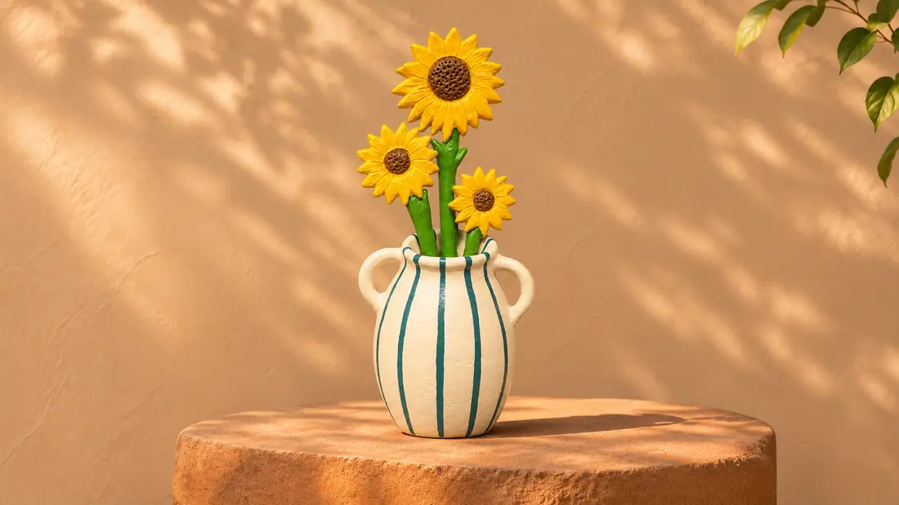

Una historia de barro, ideas y volver a empezar
Arca Ceramics es un proyecto creativo de La Habana que convierte ideas en piezas hechas a mano.
Conocer la voz de Arca en Instagram ↗︎
El barro como una forma de contar
Al hablar de sus primeros años, Arca ha descrito el proyecto como hobby, reto, sueño y segunda oportunidad. La cerámica abrió un camino para transformar ideas, referencias y personajes queridos en objetos que se pueden tener cerca.
Su trabajo combina piezas funcionales y decorativas con encargos personales. El proceso también forma parte de la historia: probar, aprender, resolver lo que aparece en el taller y celebrar cada pieza que encuentra su casa.
HobbyRetoSegunda oportunidad
Hecho a mano, pensado para alguien
Las pequeñas variaciones son la huella de las manos: cada objeto tiene su propio carácter. Y detrás de cada encargo hay un motivo, una referencia o un recuerdo que se convierte en una pieza para usar, regalar o guardar cerca.
Hablemos por WhatsApp
Para una duda rápida, un encargo o preguntar por un taller, es la vía más sencilla. Respondemos lo antes posible.
Abrir WhatsApp ↗︎- WhatsApp+53 5 463 8470
- Instagram@arca_ceramics ↗︎
- Centro HabanaRecogida o entrega a domicilio →